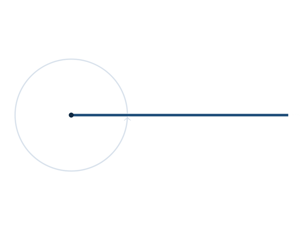
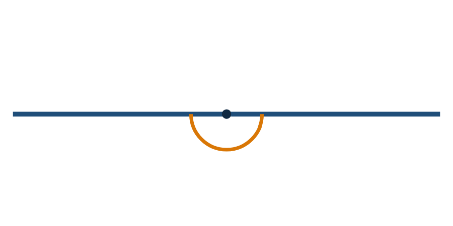

Bir açıyı, bir ışının başlangıç noktasına göre dönmesi olarak da düşünebiliriz. Işın tam bir tur dönerse tam açı (360°), yarım tur dönerse doğru açı (180°) oluşur.


Dik açı
Ölçüsü 90° olan açıdır.
Doğru açı
Ölçüsü 180° olan açıdır.
Tam açı
Ölçüsü 360° olan açıdır.
Eş açılar
Ölçüleri birbirine eşit olan açılardır.
Açıölçer, yarım daire (veya tam daire) biçiminde, üzerinde 0°'den 180°'ye (veya 360°'ye) kadar dereceler bulunan bir ölçme aracıdır.
1) Açıölçerin merkezindeki işareti açının köşesine yerleştir.
2) Açıölçerdeki 0° çizgisini açının bir kolu ile çakıştır.
3) Diğer kolun geçtiği yerdeki dereceyi oku.
Açı ölçme aracı, seçilen üç nokta (ya da iki ışın) arasındaki açıyı otomatik olarak derece cinsinden gösterir.
Açıölçerini kullanarak aşağıdaki açının kaç derece olduğunu kutuya yaz.
Aşağıdaki hareketli kolun ucundaki noktayı tutup sürükleyerek istenen açıyı oluşturmaya çalış.
Saat kadranı
Akrep ile yelkovan arasında bir açı oluşur.
Kapı ve pencere
Bir kapının açılma miktarı bir açı ile ifade edilebilir.
Rampa ve merdiven
Bir rampanın eğimi bir açı ile tanımlanabilir.
Mimari
Bina cephelerinde ve çatılarda çeşitli açılar kullanılır.
Kareli kâğıt üzerindeki açıya bak. Kesik çizgi dik açının kolunu gösterir; açının bu çizgiye göre durumuna bakarak açıyı dar, dik, geniş ya da doğru olarak sınıflandır. Ölçüsünü cevaptan sonra göreceksin.
Derece
Tam açının 360'ta biri.
Dik açı
90°
Doğru açı
180°
Tam açı
360°
Eş açılar
Ölçüleri eşit açılar.
Açıölçer kullanımı
Merkez köşeye, 0° çizgisi açının bir koluna hizalanır.